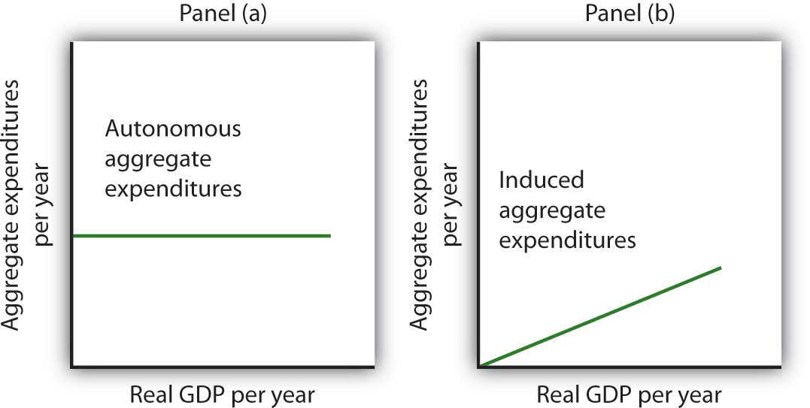
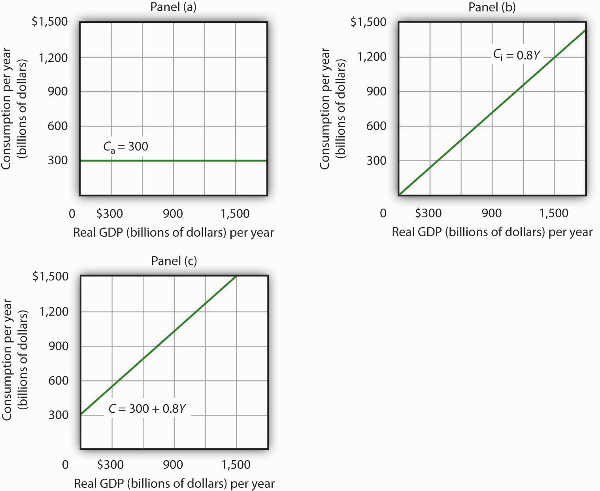
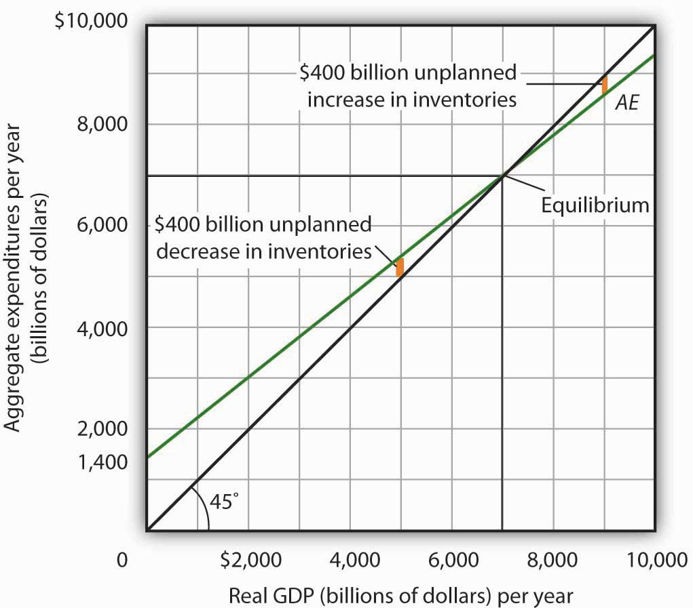
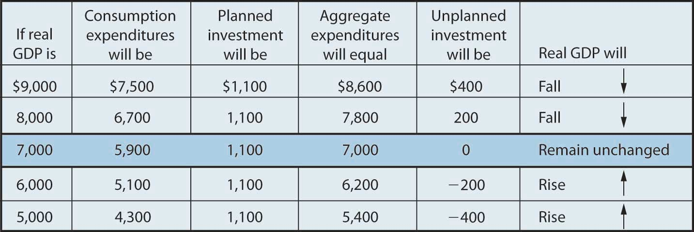
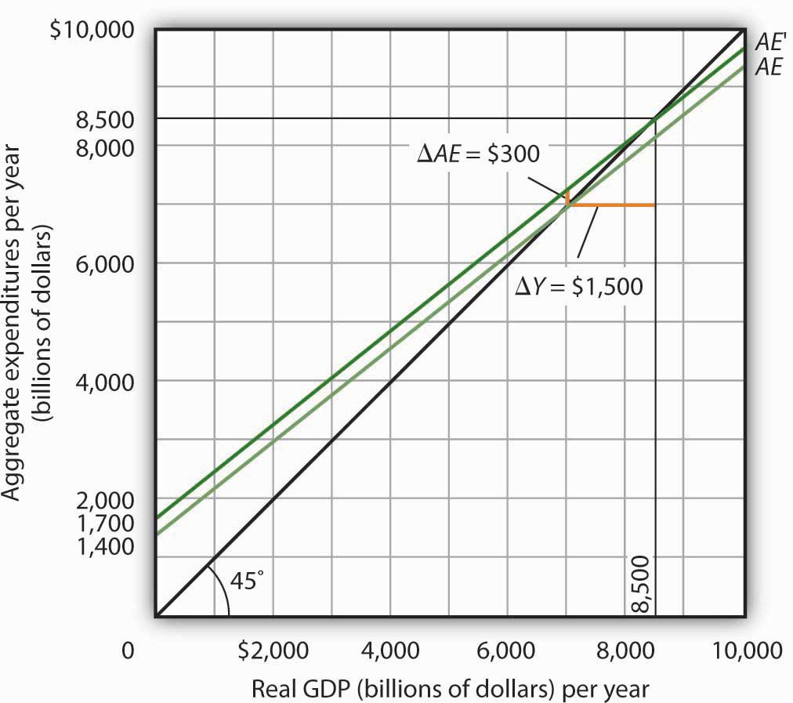
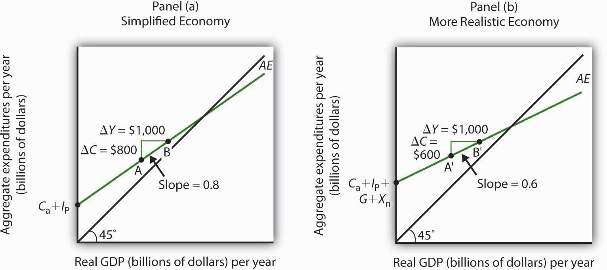

The consumption function relates the level of consumption in a period to the level of disposable personal income in that period. In this section, we incorporate other components of aggregate demand: investment, government purchases, and net exports. In doing so, we shall develop a new model of the determination of equilibrium real GDP, the aggregate expenditures modelModel that relates aggregate expenditures to the level of real GDP.. This model relates aggregate expendituresThe sum of planned levels of consumption, investment, government purchases, and net exports at a given price level., which equal the sum of planned levels of consumption, investment, government purchases, and net exports at a given price level, to the level of real GDP. We shall see that people, firms, and government agencies may not always spend what they had planned to spend. If so, then actual real GDP will not be the same as aggregate expenditures, and the economy will not be at the equilibrium level of real GDP.
One purpose of examining the aggregate expenditures model is to gain a deeper understanding of the “ripple effects” from a change in one or more components of aggregate demand. As we saw in the chapter that introduced the aggregate demand and aggregate supply model, a change in investment, government purchases, or net exports leads to greater production; this creates additional income for households, which induces additional consumption, leading to more production, more income, more consumption, and so on. The aggregate expenditures model provides a context within which this series of ripple effects can be better understood. A second reason for introducing the model is that we can use it to derive the aggregate demand curve for the model of aggregate demand and aggregate supply.
To see how the aggregate expenditures model works, we begin with a very simplified model in which there is neither a government sector nor a foreign sector. Then we use the findings based on this simplified model to build a more realistic model. The equations for the simplified economy are easier to work with, and we can readily apply the conclusions reached from analyzing a simplified economy to draw conclusions about a more realistic one.
To develop a simple model, we assume that there are only two components of aggregate expenditures: consumption and investment. In the chapter on measuring total output and income, we learned that real gross domestic product and real gross domestic income are the same thing. With no government or foreign sector, gross domestic income in this economy and disposable personal income would be nearly the same. To simplify further, we will assume that depreciation and undistributed corporate profits (retained earnings) are zero. Thus, for this example, we assume that disposable personal income and real GDP are identical.
Finally, we shall also assume that the only component of aggregate expenditures that may not be at the planned level is investment. Firms determine a level of investment they intend to make in each period. The level of investment firms intend to make in a period is called planned investmentThe level of investment firms intend to make in a period.. Some investment is unplanned. Suppose, for example, that firms produce and expect to sell more goods during a period than they actually sell. The unsold goods will be added to the firms’ inventories, and they will thus be counted as part of investment. Unplanned investmentInvestment during a period that firms did not intend to make. is investment during a period that firms did not intend to make. It is also possible that firms may sell more than they had expected. In this case, inventories will fall below what firms expected, in which case, unplanned investment would be negative. Investment during a period equals the sum of planned investment (IP) and unplanned investment (IU).
Equation 28.6
We shall find that planned and unplanned investment play key roles in the aggregate expenditures model.
Economists distinguish two types of expenditures. Expenditures that do not vary with the level of real GDP are called autonomous aggregate expendituresExpenditures that do not vary with the level of real GDP.. In our example, we assume that planned investment expenditures are autonomous. Expenditures that vary with real GDP are called induced aggregate expendituresExpenditures that vary with real GDP.. Consumption spending that rises with real GDP is an example of an induced aggregate expenditure. Figure 28.5 "Autonomous and Induced Aggregate Expenditures" illustrates the difference between autonomous and induced aggregate expenditures. With real GDP on the horizontal axis and aggregate expenditures on the vertical axis, autonomous aggregate expenditures are shown as a horizontal line in Panel (a). A curve showing induced aggregate expenditures has a slope greater than zero; the value of an induced aggregate expenditure changes with changes in real GDP. Panel (b) shows induced aggregate expenditures that are positively related to real GDP.
Figure 28.5 Autonomous and Induced Aggregate Expenditures
Autonomous aggregate expenditures do not vary with the level of real GDP; induced aggregate expenditures do. Autonomous aggregate expenditures are shown by the horizontal line in Panel (a). Induced aggregate expenditures vary with real GDP, as in Panel (b).
The concept of the marginal propensity to consume suggests that consumption contains induced aggregate expenditures; an increase in real GDP raises consumption. But consumption contains an autonomous component as well. The level of consumption at the intersection of the consumption function and the vertical axis is regarded as autonomous consumption; this level of spending would occur regardless of the level of real GDP.
Consider the consumption function we used in deriving the schedule and curve illustrated in Figure 28.2 "Plotting a Consumption Function":
We can omit the subscript on disposable personal income because of the simplifications we have made in this section, and the symbol Y can be thought of as representing both disposable personal income and GDP. Because we assume that the price level in the aggregate expenditures model is constant, GDP equals real GDP. At every level of real GDP, consumption includes $300 billion in autonomous aggregate expenditures. It will also contain expenditures “induced” by the level of real GDP. At a level of real GDP of $2,000 billion, for example, consumption equals $1,900 billion: $300 billion in autonomous aggregate expenditures and $1,600 billion in consumption induced by the $2,000 billion level of real GDP.
Figure 28.6 "Autonomous and Induced Consumption" illustrates these two components of consumption. Autonomous consumption, Ca, which is always $300 billion, is shown in Panel (a); its equation is
Equation 28.7
Induced consumption Ci is shown in Panel (b); its equation is
Equation 28.8
The consumption function is given by the sum of Equation 28.7 and Equation 28.8; it is shown in Panel (c) of Figure 28.6 "Autonomous and Induced Consumption". It is the same as the equation C = $300 billion + 0.8Yd, since in this simple example, Y and Yd are the same.
Figure 28.6 Autonomous and Induced Consumption
Consumption has an autonomous component and an induced component. In Panel (a), autonomous consumption Ca equals $300 billion at every level of real GDP. Panel (b) shows induced consumption Ci. Total consumption C is shown in Panel (c).
In this simplified economy, investment is the only other component of aggregate expenditures. We shall assume that investment is autonomous and that firms plan to invest $1,100 billion per year.
Equation 28.9
The level of planned investment is unaffected by the level of real GDP.
Aggregate expenditures equal the sum of consumption C and planned investment IP. The aggregate expenditures functionThe relationship of aggregate expenditures to the value of real GDP. is the relationship of aggregate expenditures to the value of real GDP. It can be represented with an equation, as a table, or as a curve.
We begin with the definition of aggregate expenditures AE when there is no government or foreign sector:
Equation 28.10
Substituting the information from above on consumption and planned investment yields (throughout this discussion all values are in billions of base-year dollars)
or
Equation 28.11
Equation 28.11 is the algebraic representation of the aggregate expenditures function. We shall use this equation to determine the equilibrium level of real GDP in the aggregate expenditures model. It is important to keep in mind that aggregate expenditures measure total planned spending at each level of real GDP (for any given price level). Real GDP is total production. Aggregate expenditures and real GDP need not be equal, and indeed will not be equal except when the economy is operating at its equilibrium level, as we will see in the next section.
In Equation 28.11, the autonomous component of aggregate expenditures is $1,400 billion, and the induced component is 0.8Y. We shall plot this aggregate expenditures function. To do so, we arbitrarily select various levels of real GDP and then use Equation 28.10 to compute aggregate expenditures at each level. At a level of real GDP of $6,000 billion, for example, aggregate expenditures equal $6,200 billion:
The table in Figure 28.7 "Plotting the Aggregate Expenditures Curve" shows the values of aggregate expenditures at various levels of real GDP. Based on these values, we plot the aggregate expenditures curve. To obtain each value for aggregate expenditures, we simply insert the corresponding value for real GDP into Equation 28.11. The value at which the aggregate expenditures curve intersects the vertical axis corresponds to the level of autonomous aggregate expenditures. In our example, autonomous aggregate expenditures equal $1,400 billion. That figure includes $1,100 billion in planned investment, which is assumed to be autonomous, and $300 billion in autonomous consumption expenditure.
Figure 28.7 Plotting the Aggregate Expenditures Curve

Values for aggregate expenditures AE are computed by inserting values for real GDP into Equation 28.10; these are given in the aggregate expenditures schedule. The point at which the aggregate expenditures curve intersects the vertical axis is the value of autonomous aggregate expenditures, here $1,400 billion. The slope of this aggregate expenditures curve is 0.8.
The slope of the aggregate expenditures curve, given by the change in aggregate expenditures divided by the change in real GDP between any two points, measures the additional expenditures induced by increases in real GDP. The slope for the aggregate expenditures curve in Figure 28.7 "Plotting the Aggregate Expenditures Curve" is shown for points B and C: it is 0.8.
In Figure 28.7 "Plotting the Aggregate Expenditures Curve", the slope of the aggregate expenditures curve equals the marginal propensity to consume. This is because we have assumed that the only other expenditure, planned investment, is autonomous and that real GDP and disposable personal income are identical. Changes in real GDP thus affect only consumption in this simplified economy.
Real GDP is a measure of the total output of firms. Aggregate expenditures equal total planned spending on that output. Equilibrium in the model occurs where aggregate expenditures in some period equal real GDP in that period. One way to think about equilibrium is to recognize that firms, except for some inventory that they plan to hold, produce goods and services with the intention of selling them. Aggregate expenditures consist of what people, firms, and government agencies plan to spend. If the economy is at its equilibrium real GDP, then firms are selling what they plan to sell (that is, there are no unplanned changes in inventories).
Figure 28.8 "Determining Equilibrium in the Aggregate Expenditures Model" illustrates the concept of equilibrium in the aggregate expenditures model. A 45-degree line connects all the points at which the values on the two axes, representing aggregate expenditures and real GDP, are equal. Equilibrium must occur at some point along this 45-degree line. The point at which the aggregate expenditures curve crosses the 45-degree line is the equilibrium real GDP, here achieved at a real GDP of $7,000 billion.
Figure 28.8 Determining Equilibrium in the Aggregate Expenditures Model
The 45-degree line shows all the points at which aggregate expenditures AE equal real GDP, as required for equilibrium. The equilibrium solution occurs where the AE curve crosses the 45-degree line, at a real GDP of $7,000 billion.
Equation 28.11 tells us that at a real GDP of $7,000 billion, the sum of consumption and planned investment is $7,000 billion—precisely the level of output firms produced. At that level of output, firms sell what they planned to sell and keep inventories that they planned to keep. A real GDP of $7,000 billion represents equilibrium in the sense that it generates an equal level of aggregate expenditures.
If firms were to produce a real GDP greater than $7,000 billion per year, aggregate expenditures would fall short of real GDP. At a level of real GDP of $9,000 billion per year, for example, aggregate expenditures equal $8,600 billion. Firms would be left with $400 billion worth of goods they intended to sell but did not. Their actual level of investment would be $400 billion greater than their planned level of investment. With those unsold goods on hand (that is, with an unplanned increase in inventories), firms would be likely to cut their output, moving the economy toward its equilibrium GDP of $7,000 billion. If firms were to produce $5,000 billion, aggregate expenditures would be $5,400 billion. Consumers and firms would demand more than was produced; firms would respond by reducing their inventories below the planned level (that is, there would be an unplanned decrease in inventories) and increasing their output in subsequent periods, again moving the economy toward its equilibrium real GDP of $7,000 billion. Figure 28.9 "Adjusting to Equilibrium Real GDP" shows possible levels of real GDP in the economy for the aggregate expenditures function illustrated in Figure 28.8 "Determining Equilibrium in the Aggregate Expenditures Model". It shows the level of aggregate expenditures at various levels of real GDP and the direction in which real GDP will change whenever AE does not equal real GDP. At any level of real GDP other than the equilibrium level, there is unplanned investment.
Figure 28.9 Adjusting to Equilibrium Real GDP
Each level of real GDP will result in a particular amount of aggregate expenditures. If aggregate expenditures are less than the level of real GDP, firms will reduce their output and real GDP will fall. If aggregate expenditures exceed real GDP, then firms will increase their output and real GDP will rise. If aggregate expenditures equal real GDP, then firms will leave their output unchanged; we have achieved equilibrium in the aggregate expenditures model. At equilibrium, there is no unplanned investment. Here, that occurs at a real GDP of $7,000 billion.
In the aggregate expenditures model, equilibrium is found at the level of real GDP at which the aggregate expenditures curve crosses the 45-degree line. It follows that a shift in the curve will change equilibrium real GDP. Here we will examine the magnitude of such changes.
Figure 28.10 "A Change in Autonomous Aggregate Expenditures Changes Equilibrium Real GDP" begins with the aggregate expenditures curve shown in Figure 28.8 "Determining Equilibrium in the Aggregate Expenditures Model". Now suppose that planned investment increases from the original value of $1,100 billion to a new value of $1,400 billion—an increase of $300 billion. This increase in planned investment shifts the aggregate expenditures curve upward by $300 billion, all other things unchanged. Notice, however, that the new aggregate expenditures curve intersects the 45-degree line at a real GDP of $8,500 billion. The $300 billion increase in planned investment has produced an increase in equilibrium real GDP of $1,500 billion.
Figure 28.10 A Change in Autonomous Aggregate Expenditures Changes Equilibrium Real GDP
An increase of $300 billion in planned investment raises the aggregate expenditures curve by $300 billion. The $300 billion increase in planned investment results in an increase in equilibrium real GDP of $1,500 billion.
How could an increase in aggregate expenditures of $300 billion produce an increase in equilibrium real GDP of $1,500 billion? The answer lies in the operation of the multiplier. Because firms have increased their demand for investment goods (that is, for capital) by $300 billion, the firms that produce those goods will have $300 billion in additional orders. They will produce $300 billion in additional real GDP and, given our simplifying assumption, $300 billion in additional disposable personal income. But in this economy, each $1 of additional real GDP induces $0.80 in additional consumption. The $300 billion increase in autonomous aggregate expenditures initially induces $240 billion (= 0.8 × $300 billion) in additional consumption.
The $240 billion in additional consumption boosts production, creating another $240 billion in real GDP. But that second round of increase in real GDP induces $192 billion (= 0.8 × $240) in additional consumption, creating still more production, still more income, and still more consumption. Eventually (after many additional rounds of increases in induced consumption), the $300 billion increase in aggregate expenditures will result in a $1,500 billion increase in equilibrium real GDP. Table 28.1 "The Multiplied Effect of an Increase in Autonomous Aggregate Expenditures" shows the multiplied effect of a $300 billion increase in autonomous aggregate expenditures, assuming each $1 of additional real GDP induces $0.80 in additional consumption.
Table 28.1 The Multiplied Effect of an Increase in Autonomous Aggregate Expenditures
| Round of spending | Increase in real GDP (billions of dollars) |
|---|---|
| 1 | $300 |
| 2 | 240 |
| 3 | 192 |
| 4 | 154 |
| 5 | 123 |
| 6 | 98 |
| 7 | 79 |
| 8 | 63 |
| 9 | 50 |
| 10 | 40 |
| 11 | 32 |
| 12 | 26 |
| Subsequent rounds | +103 |
| Total increase in real GDP | $1,500 |
The size of the additional rounds of expenditure is based on the slope of the aggregate expenditures function, which in this example is simply the marginal propensity to consume. Had the slope been flatter (if the marginal propensity to consume were smaller), the additional rounds of spending would have been smaller. A steeper slope would mean that the additional rounds of spending would have been larger.
This process could also work in reverse. That is, a decrease in planned investment would lead to a multiplied decrease in real GDP. A reduction in planned investment would reduce the incomes of some households. They would reduce their consumption by the MPC times the reduction in their income. That, in turn, would reduce incomes for households that would have received the spending by the first group of households. The process continues, thus multiplying the impact of the reduction in aggregate expenditures resulting from the reduction in planned investment.
The multiplierThe number by which we multiply an initial change in aggregate demand to get the full amount of the shift in the aggregate demand curve. is the number by which we multiply an initial change in aggregate demand to get the full amount of the shift in the aggregate demand curve. Because the multiplier shows the amount by which the aggregate demand curve shifts at a given price level, and the aggregate expenditures model assumes a given price level, we can use the aggregate expenditures model to derive the multiplier explicitly.
Let Yeq be the equilibrium level of real GDP in the aggregate expenditures model, and let A be autonomous aggregate expenditures. Then the multiplier is
Equation 28.12
In the example we have just discussed, a change in autonomous aggregate expenditures of $300 billion produced a change in equilibrium real GDP of $1,500 billion. The value of the multiplier is therefore $1,500/$300 = 5.
The multiplier effect works because a change in autonomous aggregate expenditures causes a change in real GDP and disposable personal income, inducing a further change in the level of aggregate expenditures, which creates still more GDP and thus an even higher level of aggregate expenditures. The degree to which a given change in real GDP induces a change in aggregate expenditures is given in this simplified economy by the marginal propensity to consume, which, in this case, is the slope of the aggregate expenditures curve. The slope of the aggregate expenditures curve is thus linked to the size of the multiplier. We turn now to an investigation of the relationship between the marginal propensity to consume and the multiplier.
We can compute the multiplier for this simplified economy from the marginal propensity to consume. We know that the amount by which equilibrium real GDP will change as a result of a change in aggregate expenditures consists of two parts: the change in autonomous aggregate expenditures itself, , and the induced change in spending. This induced change equals the marginal propensity to consume times the change in equilibrium real GDP, ΔYeq. Thus
Equation 28.13
Subtract the MPCΔYeq term from both sides of the equation:
Factor out the ΔYeq term on the left:
Finally, solve for the multiplier by dividing both sides of the equation above by ΔA and by dividing both sides by (1 − MPC). We get the following:
Equation 28.14
We thus compute the multiplier by taking 1 minus the marginal propensity to consume, then dividing the result into 1. In our example, the marginal propensity to consume is 0.8; the multiplier is 5, as we have already seen [multiplier = 1/(1 − MPC) = 1/(1 − 0.8) = 1/0.2 = 5]. Since the sum of the marginal propensity to consume and the marginal propensity to save is 1, the denominator on the right-hand side of Equation 28.13 is equivalent to the MPS, and the multiplier could also be expressed as 1/MPS.
Equation 28.15
We can rearrange terms in Equation 28.14 to use the multiplier to compute the impact of a change in autonomous aggregate expenditures. We simply multiply both sides of the equation by to obtain the following:
Equation 28.16
The change in the equilibrium level of income in the aggregate expenditures model (remember that the model assumes a constant price level) equals the change in autonomous aggregate expenditures times the multiplier. Thus, the greater the multiplier, the greater will be the impact on income of a change in autonomous aggregate expenditures.
Four conclusions emerge from our application of the aggregate expenditures model to the simplified economy presented so far. These conclusions can be applied to a more realistic view of the economy.
These four points still hold as we add the two other components of aggregate expenditures—government purchases and net exports—and recognize that government not only spends but also collects taxes. We look first at the effect of adding taxes to the aggregate expenditures model and then at the effect of adding government purchases and net exports.
Suppose that the only difference between real GDP and disposable personal income is personal income taxes. Let us see what happens to the slope of the aggregate expenditures function.
As before, we assume that the marginal propensity to consume is 0.8, but we now add the assumption that income taxes take ¼ of real GDP. This means that for every additional $1 of real GDP, disposable personal income rises by $0.75 and, in turn, consumption rises by $0.60 (= 0.8 × $0.75). In the simplified model in which disposable personal income and real GDP were the same, an additional $1 of real GDP raised consumption by $0.80. The slope of the aggregate expenditures curve was 0.8, the marginal propensity to consume. Now, as a result of taxes, the aggregate expenditures curve will be flatter than the one shown in Figure 28.7 "Plotting the Aggregate Expenditures Curve" and Figure 28.9 "Adjusting to Equilibrium Real GDP". In this example, the slope will be 0.6; an additional $1 of real GDP will increase consumption by $0.60.
Other things the same, the multiplier will be smaller than it was in the simplified economy in which disposable personal income and real GDP were identical. The wedge between disposable personal income and real GDP created by taxes means that the additional rounds of spending induced by a change in autonomous aggregate expenditures will be smaller than if there were no taxes. Hence, the multiplied effect of any change in autonomous aggregate expenditures is smaller.
Suppose that government purchases and net exports are autonomous. If so, they enter the aggregate expenditures function in the same way that investment did. Compared to the simplified aggregate expenditures model, the aggregate expenditures curve shifts up by the amount of government purchases and net exports.An even more realistic view of the economy might assume that imports are induced, since as a country’s real GDP rises it will buy more goods and services, some of which will be imports. In that case, the slope of the aggregate expenditures curve would change.
Figure 28.11 "The Aggregate Expenditures Function: Comparison of a Simplified Economy and a More Realistic Economy" shows the difference between the aggregate expenditures model of the simplified economy in Figure 28.8 "Determining Equilibrium in the Aggregate Expenditures Model" and a more realistic view of the economy. Panel (a) shows an AE curve for an economy with only consumption and investment expenditures. In Panel (b), the AE curve includes all four components of aggregate expenditures.
Figure 28.11 The Aggregate Expenditures Function: Comparison of a Simplified Economy and a More Realistic Economy
Panel (a) shows an aggregate expenditures curve for a simplified view of the economy; Panel (b) shows an aggregate expenditures curve for a more realistic model. The AE curve in Panel (b) has a higher intercept than the AE curve in Panel (a) because of the additional components of autonomous aggregate expenditures in a more realistic view of the economy. The slope of the AE curve in Panel (b) is flatter than the slope of the AE curve in Panel (a). In a simplified economy, the slope of the AE curve is the marginal propensity to consume (MPC). In a more realistic view of the economy, it is less than the MPC because of the difference between real GDP and disposable personal income.
There are two major differences between the aggregate expenditures curves shown in the two panels. Notice first that the intercept of the AE curve in Panel (b) is higher than that of the AE curve in Panel (a). The reason is that, in addition to the autonomous part of consumption and planned investment, there are two other components of aggregate expenditures—government purchases and net exports—that we have also assumed are autonomous. Thus, the intercept of the aggregate expenditures curve in Panel (b) is the sum of the four autonomous aggregate expenditures components: consumption (Ca), planned investment (IP), government purchases (G), and net exports (Xn). In Panel (a), the intercept includes only the first two components.
Second, notice that the slope of the aggregate expenditures curve is flatter for the more realistic economy in Panel (b) than it is for the simplified economy in Panel (a). This can be seen by comparing the slope of the aggregate expenditures curve between points A and B in Panel (a) to the slope of the aggregate expenditures curve between points A′ and B′ in Panel (b). Between both sets of points, real GDP changes by the same amount, $1,000 billion. In Panel (a), consumption rises by $800 billion, whereas in Panel (b) consumption rises by only $600 billion. This difference occurs because, in the more realistic view of the economy, households have only a fraction of real GDP available as disposable personal income. Thus, for a given change in real GDP, consumption rises by a smaller amount.
Let us examine what happens to equilibrium real GDP in each case if there is a shift in autonomous aggregate expenditures, such as an increase in planned investment, as shown in Figure 28.12 "A Change in Autonomous Aggregate Expenditures: Comparison of a Simplified Economy and a More Realistic Economy". In both panels, the initial level of equilibrium real GDP is the same, Y1. Equilibrium real GDP occurs where the given aggregate expenditures curve intersects the 45-degree line. The aggregate expenditures curve shifts up by the same amount—ΔA is the same in both panels. The new level of equilibrium real GDP occurs where the new AE curve intersects the 45-degree line. In Panel (a), we see that the new level of equilibrium real GDP rises to Y2, but in Panel (b) it rises only to Y3. Since the same change in autonomous aggregate expenditures led to a greater increase in equilibrium real GDP in Panel (a) than in Panel (b), the multiplier for the more realistic model of the economy must be smaller. The multiplier is smaller, of course, because the slope of the aggregate expenditures curve is flatter.
Figure 28.12 A Change in Autonomous Aggregate Expenditures: Comparison of a Simplified Economy and a More Realistic Economy

In Panels (a) and (b), equilibrium real GDP is initially Y1. Then autonomous aggregate expenditures rise by the same amount, ΔIP. In Panel (a), the upward shift in the AE curve leads to a new level of equilibrium real GDP of Y2; in Panel (b) equilibrium real GDP rises to Y3. Because equilibrium real GDP rises by more in Panel (a) than in Panel (b), the multiplier in the simplified economy is greater than in the more realistic one.
Suppose you are given the following data for an economy. All data are in billions of dollars. Y is actual real GDP, and C, IP, G, and Xn are the consumption, planned investment, government purchases, and net exports components of aggregate expenditures, respectively.
| Y | C | I p | G | X n |
|---|---|---|---|---|
| $0 | $800 | $1,000 | $1,400 | −$200 |
| 2,500 | 2,300 | 1,000 | 1,400 | −200 |
| 5,000 | 3,800 | 1,000 | 1,400 | −200 |
| 7,500 | 5,300 | 1,000 | 1,400 | −200 |
| 10,000 | 6,800 | 1,000 | 1,400 | −200 |
It was the first time expansionary fiscal policy had ever been proposed. The economy had slipped into a recession in 1960. Presidential candidate John Kennedy received proposals from several economists that year for a tax cut aimed at stimulating the economy. As a candidate, he was unconvinced. But, as president he proposed the tax cut in 1962. His chief economic adviser, Walter Heller, defended the tax cut idea before Congress and introduced what was politically a novel concept: the multiplier.
In testimony to the Senate Subcommittee on Employment and Manpower, Mr. Heller predicted that a $10 billion cut in personal income taxes would boost consumption “by over $9 billion.”
To assess the ultimate impact of the tax cut, Mr. Heller applied the aggregate expenditures model. He rounded the increased consumption off to $9 billion and explained,
“This is far from the end of the matter. The higher production of consumer goods to meet this extra spending would mean extra employment, higher payrolls, higher profits, and higher farm and professional and service incomes. This added purchasing power would generate still further increases in spending and incomes. … The initial rise of $9 billion, plus this extra consumption spending and extra output of consumer goods, would add over $18 billion to our annual GDP.”
We can summarize this continuing process by saying that a “multiplier” of approximately 2 has been applied to the direct increment of consumption spending.
Mr. Heller also predicted that proposed cuts in corporate income tax rates would increase investment by about $6 billion. The total change in autonomous aggregate expenditures would thus be $15 billion: $9 billion in consumption and $6 billion in investment. He predicted that the total increase in equilibrium GDP would be $30 billion, the amount the Council of Economic Advisers had estimated would be necessary to reach full employment.
In the end, the tax cut was not passed until 1964, after President Kennedy’s assassination in 1963. While the Council of Economic Advisers concluded that the tax cut had worked as advertised, it came long after the economy had recovered and tended to push the economy into an inflationary gap. As we will see in later chapters, the tax cut helped push the economy into a period of rising inflation.
Source: Economic Report of the President 1964 (Washington, DC: U.S. Government Printing Office, 1964), 172–73.
The intercept of the AE1 curve is $3,000. It is the amount of aggregate expenditures (C + IP + G + Xn) when real GDP is zero. The slope of the AE1 curve is 0.6. It can be found by determining the amount of aggregate expenditures for any two levels of real GDP and then by dividing the change in aggregate expenditures by the change in real GDP over the interval. For example, between real GDP of $2,500 and $5,000, aggregate expenditures go from $4,500 to $6,000. Thus,